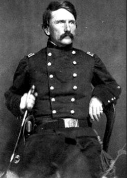

|
Missouri's Unionists were divided; the conservatives, called Claybanks, wanting
to move slowly on the matter of emancipation, and the radicals, called
Charcoals, favoring immediate action. When the legislature of 1862 was
deadlocked about this question, Governor Hamilton R. Gamble reconvened the 1861
convention, in which the Claybanks prevailed and passed a measure for gradual
emancipation starting in 1870. They won again in the bitterly contested judicial
election of 1863; the radicals, however, were able to elect Benjamin Gratz Brown
to the Senate. In 1864, despite their opposition to the renomination of Abraham
Lincoln, the radicals succeeded in seating their delegates at the Union National
Convention in Baltimore and eventually agreed to support the President's ticket.
In the fall of 1864 Lincoln carried the state; the radical Thomas C. Fletcher
was elected Governor, and both houses of the legislature were under Charcoal
control. A constitutional convention elected at the same time met in January
1865, freed the slaves, and proceeded to frame a new basic law for the state.
Largely inspired by Charles D. Drake, it provided for stringent test oaths not
|

Francis P. Blair, Jr.
|
only for voters but also for certain professionals and the ousting of most
incumbent officials. Authorizing education for both races, it secured civil
rights for blacks but failed to give them the vote. Ratification was secured
only after a hard contest in which Francis P. Blair, Jr. led the opposition.
In 1866 another contest loomed. Aided by Andrew Johnson, the conservatives
sought to gain control of the legislature. But the rigorous disfranchisement
rules enabled the radicals to prevail again, although in the next year the
Supreme Court, in Cummings v. Missouri and ex parse Garland, declared some of
the test oaths unconstitutional. The radicals elected Drake to the Senate and
provided the state with a progressive administration. Strengthening the economy,
they built railroads, introduced a general incorporation law, and sanctioned the
eight-hour day. In addition, they improved the public school system and in 1868
enabled U.S. Grant to win in Missouri.
Nevertheless, its proscriptive measures rendered the radical administration
unpopular. In 1869 the German-American leader Carl Schurz, who had come to St.
Louis barely two years earlier to edit the Westliche Post, despite Drake's
opposition, was elected U.S. Senator. But he soon fell out with the national
administration. Differing on foreign policy, civil service reform, and
Reconstruction, he was one of the founders of the Liberal Republican movement,
and when the Republicans met in convention in 1870, the Liberals, unable to
secure their platform, bolted and made common cause with the Democrats. The
coalition won, elected Brown Governor, and brought about the repeal of the test
oaths. Even though Missouri ratified the Fifteenth Amendment, and the state's
African Americans obtained the vote, the Democrats reemerged as the strongest
party in the state. In 1871 they sent Blair to the Senate; in 1872 they carried
Missouri for Horace Greeley, and in 1874 they elected a former Confederate
general to take the place of Carl Schurz. Writing a new constitution in 1875,
they continued to dominate the state until the beginning of the twentieth
century.
Source: Hans Trefousse, Historical Dictionary of Reconstruction
(Westport, CT: Greenwood Press, 1991), 150-51.
|